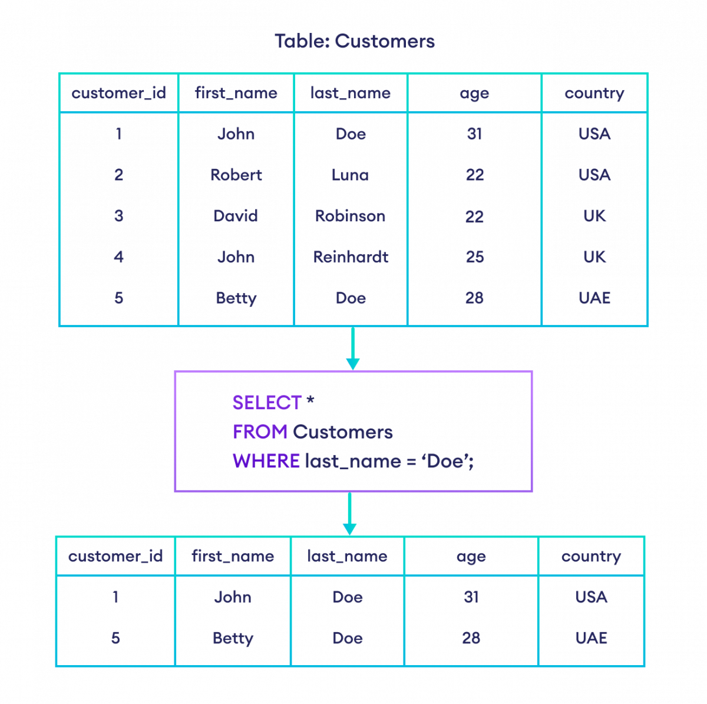
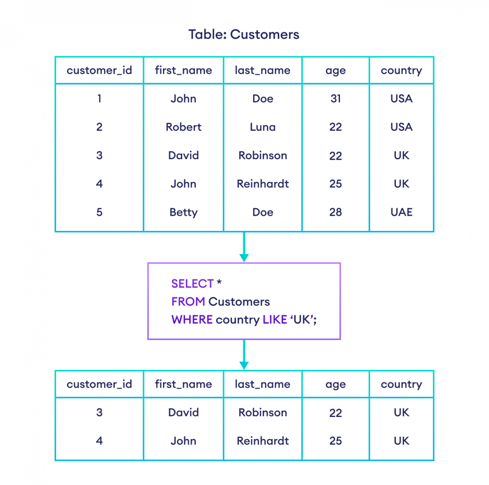

Filtraggio
Già nella lezione precedente, quando abbiamo parlato di inner join, abbiamo visto un particolare
tipo di filtraggio, l’intersezione tra insiemi. Ora vediamo invece come, con la clausola WHERE,
possiamo filtrare le nostre righe in modo molto preciso sulla base dei valori che assumono i campi.
In generale, la sintassi di questa clausola è un espressione che può essere o vera o falsa per una
certa riga del nostro insieme di dati. L’espressione più semplice ovviamente è l’eguaglianza:
SELECT * FROM Customers WHERE last_name = 'Doe'

In questo caso verranno restituite le persone aventi un certo cognome.
Si possono utilizzare due caratteri jolly:
@ il carattere % verrà soddisfatto da qualsiasi sequenza di caratteri trovata;
@ il carattere _ verrà soddisfatto da qualsiasi carattere (singolo) trovato.
SELECT * FROM Customers WHERE last_name = 'Doe' AND country LIKE 'UK'

le espressioni si possono combinare con l’operatore OR, soddisfatto quando almeno una delle
espressioni è vera:
SELECT * FROM Book WHERE year = 1983 OR year = 1993 OR year = 1980
Questo tipo di filtri si può scrivere in maniera più compatta e più comoda con l’operatore IN:
SELECT * FROM Book WHERE pub_year IN (1983, 1993, 1980)
Nel combinare espressioni AND e OR, dobbiamo ricordare che AND ha la precedenza nella valutazione.
Quindi (come per la maggior parte dei linguaggi) dobbiamo usare le parentesi per modificare
l’ordine
degli operatori, altrimenti, ad esempio, questa interrogazione potrebbe dare risultati inaspettati:
SELECT * FROM Book WHERE (year = 1983 OR year = 1993) AND publisher = 1
Infatti, eseguendola senza le parentesi, otterremmo anche i libri pubblicati nel 1983,
indipendentemente dall’editore, oltre ai libri pubblicati nel 1993 dall’editore avente ID uguale a
1.
Un altro operatore logico (stavolta unario) importante è il NOT, utilizzato per negare una
condizione:
SELECT * FROM Book WHERE NOT(volume = 1)
Questa query non restituirà né i volumi diversi dal primo, ma neanche i libri aventi il campo volume
impostato a NULL.
Questo perché in SQL il valore NULL è speciale nel senso che le espressioni che
contengono valori nulli vengono valutate come NULL, quindi richiedono i seguenti operatori speciali:
@ IS NULL
@ IS NOT NULL
Possiamo quindi riscrivere la query dell’esempio così:
SELECT * FROM Book WHERE volume IS NULL OR NOT(volume = 1)
L’operatore BETWEEN è comodo per cercare valori in un intervallo, ad esempio di date, ma può essere
usato anche con gli altri tipi. L’intervallo si intende chiuso (con gli estremi); quindi con la
seguente interrogazione avremo anche i libri pubblicati nel 1980 e nel 1993:
SELECT title, pub_year FROM Book WHERE pub_year BETWEEN 1980 AND 1993
Ordinamento
Per ordinare i risultati di una query si usa la clausola ORDER BY, seguita dalle espressioni da
valutare per effettuare l’ordinamento. Ad esempio:
SELECT last_name, age from Customers WHERE NOT country = 'UK' order by last_name desc

Questa query restituisce i cognomi che non sono presenti nella regione UK.